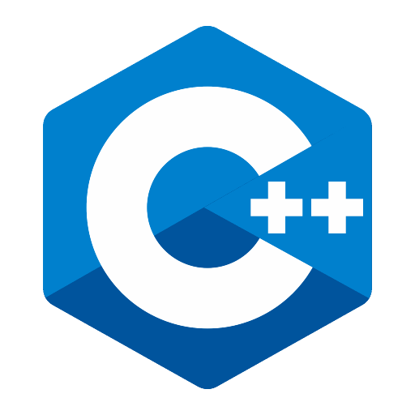

Compétences

Niveau : Débutant
Temps passé : ~50h
Temps passé : ~50h

Niveau : Découverte
Temps passé : ~10h
Temps passé : ~10h

Niveau : Moyen
Temps passé : ~80h
Temps passé : ~80h

Bonne connaissance globale du logiciel et de son fonctionnement (Travail sur unity 2D)
Temps passé : ~80h
Temps passé : ~80h
Bonne maitrise du logiciel et des extensions, liaison git etc.
Temps passé : ~250h
Temps passé : ~250h
Niveau : Découverte
Temps passé : ~10h
Temps passé : ~10h

Niveau : Débutant
Temps passé : ~20h
Temps passé : ~20h
Utilisation a l'occasion d'une traduction complète d'un serveur d'un jeu
Temps passé : ~10h
Temps passé : ~10h
D'autres logiciels utilisés :
- Davinci resolve
- Git & Github
- phpStorm
- Eclipse IDE